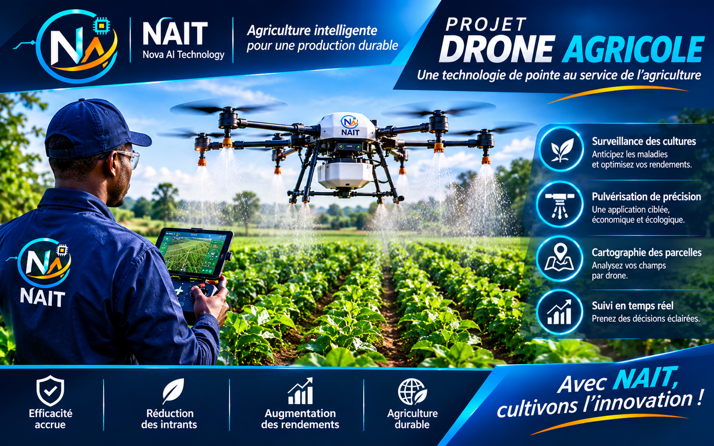
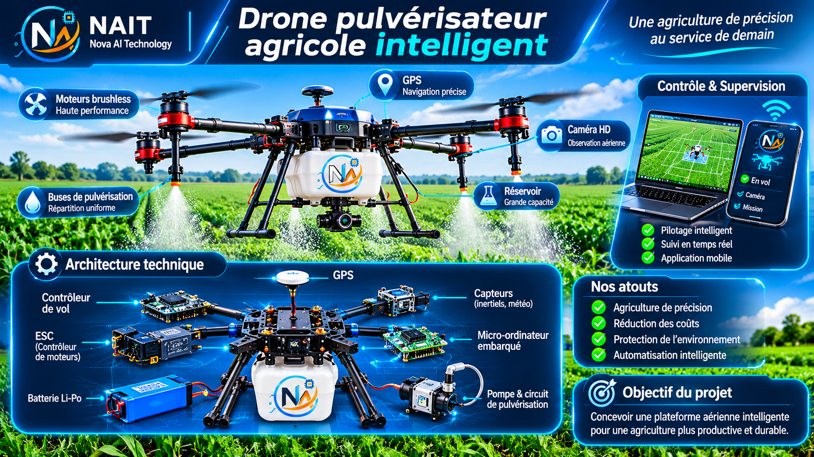

PROJET 02 · ROBOTIQUE AÉRIENNE & AGRICULTURE INTELLIGENTE
Drone pulvérisateur agricole intelligent
Une solution aérienne intelligente destinée à moderniser les opérations agricoles grâce à la navigation autonome, aux systèmes embarqués et à la pulvérisation de précision.

Présentation du projet
Le drone pulvérisateur agricole de Nova AI Technology est un système aérien conçu pour assister les opérations agricoles en combinant robotique, électronique embarquée et automatisation.
Il repose sur l'intégration d'une plateforme volante, d'un système de navigation GPS, de capteurs et d'un dispositif de pulvérisation destiné à intervenir sur les cultures.
Une caméra pourra également permettre de capturer des images aériennes afin d'observer les parcelles et de fournir des informations utiles au suivi agricole.
Fonctionnalités envisagées
- Navigation assistée par GPS
- Contrôle et stabilisation du vol
- Observation aérienne des cultures
- Acquisition d'images par caméra
- Commande du système de pulvérisation
- Automatisation de certaines opérations agricoles
CONCEPTION & INGÉNIERIE
Architecture du système NAIT
Une plateforme aérienne organisée autour de plusieurs sous-systèmes électroniques et mécaniques travaillant ensemble pour assurer le vol, la navigation et la pulvérisation agricole.

🚁 Structure aérienne
Châssis, moteurs, hélices et contrôleurs de vitesse assurant la sustentation et les déplacements.
🧠 Unité de commande
Contrôleur de vol et système embarqué chargés de gérer les différentes fonctions du drone.
📡 Navigation
GPS, capteurs inertiels et communication sans fil pour le positionnement et le suivi du vol.
📷 Observation
Caméra et capteurs destinés à l'acquisition d'informations visuelles sur les parcelles agricoles.
💧 Pulvérisation
Réservoir, pompe, conduites et buses pour assurer la distribution contrôlée du liquide.
🔋 Alimentation
Batterie et circuits de gestion de l'énergie pour alimenter les différents équipements.
Vision du système
Le drone NAIT ambitionne de réunir observation aérienne, navigation intelligente et pulvérisation contrôlée au sein d'une même plateforme agricole.
🛰️ Navigation
Définir et suivre des trajectoires de vol à l'aide des systèmes de positionnement.
📸 Observation
Capturer des images aériennes pour observer les cultures et les parcelles agricoles.
🧠 Analyse
Exploiter les informations recueillies pour assister certaines décisions agricoles.
💧 Pulvérisation
Commander le dispositif de pulvérisation selon les paramètres définis pour la mission.
Technologies envisagées
Le développement du drone s'appuiera sur l'association de technologies électroniques, informatiques et mécaniques.
- Contrôleur de vol et microcontrôleur
- Micro-ordinateur embarqué
- GPS et capteurs inertiels
- Caméra et modules de vision
- Moteurs brushless et contrôleurs ESC
- Pompe et système de pulvérisation
- Communication sans fil
- Traitement intelligent des données
Objectif du projet
Concevoir une plateforme aérienne intelligente capable d'assister les opérations agricoles en associant navigation, observation et pulvérisation contrôlée, afin de contribuer à une agriculture plus précise et automatisée.